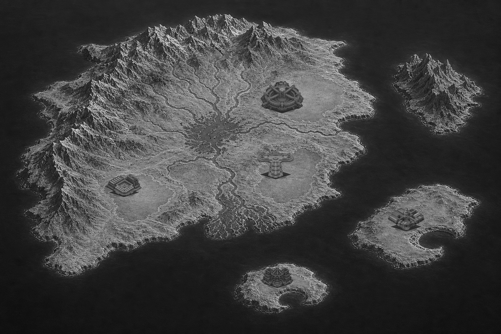

Open Basin
Maximum separation with three explicit continental lowlands and two cove islands.

- NinjaOnenortheast continental plain
- Taniumsoutheast river terrace
- Independentsouthwest continental plain
- Column Technologieslarge eastern cove island
- ACE Hardwaresmall southern cove island